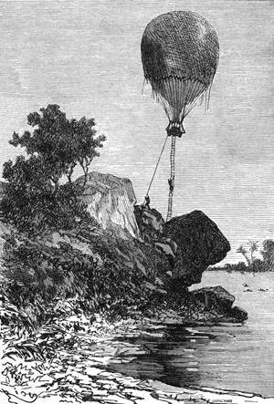

Karagve. – Jezero Ukereve. – Noc na ostrově. – Rovník. – Přelet přes jezero. – Vodopády. – Rozhled po kraji. – Prameny nilské. – Ostrov Benga. – Podpis Andrey Debona. – Vlajka s anglickým znakem.
Nazejtří v pět hodin zahájeny přípravy k odjezdu. Joe přesekl sloní kly sekerou, již byl na štěstí zase nalezl. Viktorie puštěná na svobodu unášela cestovatele k severo-východu rychlostí třicíti kilometrů.
Večer před tím byl doktor bedlivě určil polohu podle výšky hvězd. Byl na 2° 40' šířky pod rovníkem, to jest na dvě stě šedesát kilometrů; minul četné dědiny nedbaje křiku, jejž strhli domorodci, kdykoli se jich zrakům objevil balon; všímal si místních útvarů krátkými rozhledy; přenesl se přes stupňovité svahy Rubemha, téměř stejně srázné jako temena usagarská, a dostihl později v Tenze prvních odnoží pásem karagveských, která jsou po jeho soudě pokračováním hor Měsíčných. Tu se osvědčovala pravdou pověst, která tyto hory pokládala za prameniště Nilu, ježto se přimykají k jezeru Ukereve, domnělé vodní nádržky veletoku.
Z Kafura, velkého to území domácích obchodníků, spatřil konečně na obzoru jezero tolik hledané, které setník Speke shlédl dne 3. srpna 1858.
Samuel Fergusson byl rozechvěn; ocitoval se již na jednom z hlavních míst své výzkumné cesty, a tiskna dalekohled na oko, přehlížel všeliký koutek této tajemné končiny, která se jevila zrakům takto:
Pod ním namnoze suchopár; sotva několik úžlabin vzděláno; půda prostoupena kopci prostředně vysokými přecházela v rovinu směrem k jezeru; ječná pole ustupovala rýžovištím; zde rostl pisang, druh banánu, z něhož se dobývá tuzemské víno, a „mvani“, planá rostlina, která poskytuje kávu. Soubor asi padesáti okrouhlých chat, krytých vykvetlou slamou, byl hlavním městem karagveským.
Bylo snadno rozeznati užaslé tváře plemene dosti hezkého, žlutohnědé pleti. Po sadech vlekly se ženy postav víře nepodobných, a soudruzi doktorovi nemálo se podivili, když jim pověděl, že této otylosti velmi ceněné nabývají, požívajíce z donucení jedině ssedlého mléka.
O poledni octla se Viktorie na 1° 45' jižní šířky; o jedné zanesl ji vítr nad jezero.
Toto jezero nazval setník Speke ňanzou[38] Viktoriinou. V těch místech bylo zšíří asi sta čtyřicíti pěti kilometrů; v jeho poledním cípu nalezl setník skupinu ostrovů, které pojmenoval souostrovím Bengalským. Postoupil na výzkumu až do Muazy na východním pobřeží, kde byl králem dobře uvítán. Vyměřil trojúhelníky tuto končinu jezerní; ale nemohl si opatřiti člun, aby přeplul jezero, neb aby zajel na velký ostrov Ukereve; na tomto ostrově velice lidnatém, jenž o nízkém odlivu je toliko poloostrovem, panují tři králové.
Viktorie stihla k jezeru severněji k nemalé lítosti doktorově, jenž by byl rád určil jeho dolejší obrysy. Břehy porostlé trnitými křovisky a spletitými houštinami mizely takořka pod myriadami světlohnědých moskytů; tato země byla zajisté bydlitelná a obydlená; stáda hrochů povalovala se ve vysokém rákosí, nebo se potápěla do bělavé vody jezerní. Jezero jevilo s výše na západ obzor tak širý, že vypadalo jako moře; vzdálenost břehův od sebe je taková, že vzájemné styky jsou nemožny; mimo to řádívají tam prudké a časté bouřky, neboť větry zaléhají plnou silou do této vysoké, nechráněné nádrže.
Doktor udržoval se stěží v žádoucím směru; obával se, aby nebyl zavát na východ; ale na štěstí nalezl příznivý proud, který jej nesl přímo k severu, a v šest hodin večer dorazila Viktorie na pustý ostrůvek na 0° 30' šířky a 32° 52' délky na třicet kilometrův od pobřeží.
Cestovatelé zachytili se na stromě, a ježto se vítr k večeru ztišil, stáli pokojně na kotvě. Aby sestoupili na zemi, na to nebylo ani pomyšlení, neboť jako na březích ňanzy, tak i zde zastírali moskytové půdu hustým mrakem. Ba Joe vrátil se i se stromu všecek poštípán; avšak nezlobil se, jsa toho zdání, že je to od moskytů zcela přirozené.
Nicméně popustil méně optimistický doktor provaz, co nej– , více mohl, aby ušel těmto nemilosrdným hmyzům, kteří vzletovali s děsivým bzukotem.
Doktor shledal vyvýšenost jezera nad hladinou mořskou takovou, jakou byl určil setník Speke, totiž tři tisíce sedm set padesát stop.
„Tu jsme tedy na ostrově!“ pravil Joe, škrábaje se, div si nehtů neulámal.
„Obešli bychom jej za chvilku,“ odvětil lovec, „a mimo ty roztomilé hmyzy není zde vidět žádné živoucí bytosti.“
„Ostrovy po jezeru roztroušené,“ řekl doktor, „nejsou v pravdě leč vrcholky zatopených pahorkův; ale nám přeje štěstí, že jsme tu nalezli útulek, neboť na březích jezera obývají divocí kmenové. Pročež spěte, když nám nebesa chystají klidnou noc.“
„Což ty nepůjdeš rovněž spat, Samuele?“
„Nepůjdu; nezamhouřil bych ani oka. Myšlenky zaplašily by všechen spánek. Zítra, přátelé, bude-li vítr příznivý, vydáme se přímo na sever, a možná, že objevíme zřídla nilská, tajemství posud nerozřešené. Nemohl bych spáti, jsa tak blízko u pramenů veletoku.“
Kennedy a Joe, které vědecké zájmy nikterak nerozčilovaly, usnuli tvrdě za nedlouho pod ochranou doktorovou.
Ve středu, dne 23. dubna byla Viktorie ve čtyři hodiny z rána pod šedavou oblohou hotova k odjezdu; noc ustupovala těžce s jezerní hladiny, kterou halila hustá mlha, leč prudký vítr rozehnal brzy všecky ty páry. Viktorie byla několik minut zmítána různými směry a posléze zamířila rovnou k severu.
Doktor Fergusson spráskl radostí ruce.
„Jsme na dobré cestě!“ zvolal. „Dnes anebo nikdy spatříme Nil! Přátelé, teď letíme přes rovník! ociťujeme se na naší polokouli!“
„Och!“ divil se Joe; „myslíte, pane, že rovník jde tudy?“
„Právě tudy, milý hochu!“
„Nuže! s vaším dovolením, zdá se mi slušným, abychom jej svlažili, nemaříce času.“
„Sem tedy se sklenkou grogu!“ odpověděl doktor, směje se; „rozumíš kosmografii způsobem, který není hloupý.“
A tak byl na palubě Viktorie oslaven přechod přes čáru.
Balon plul rychle. Na západě bylo pozorovati nízké, málo zvlněné pobřeží, o pozadí vyšší planiny ugandské a usožské. Vítr rozmáhal se náramně: skoro na padesát kilometrů za hodinu.
Voda ňanzy mocně vzdutá, pěnila se jako valy mořské. Po některých táhlých vlnách, které dmuly se ještě dlouho po chvilkovém ztišení, poznal doktor, že jezero je zajisté velmi hluboké. Za tohoto rychlého přeletu zočili sotva jednu nebo dvě nemotorné lodice.
„Toto jezero,“ vykládal doktor, „je svou vysokou polohou patrně přirozenou nádrží řek východní části Afriky; nebe vrací mu deštěm, čeho ujímá výpary jeho přítokům. Zdá se mi jistým, že v něm Nil asi bere vznik.“
„Vždyť uvidíme,“ podotekl Kennedy.
K deváté hodině přiblížili se k západnímu pobřeží; vypadalo pusto a zalesněno. Vítr stočil se poněkud na východ, i zahlédli druhý břeh jezerní. Zahýbal se tak, že končil velmi širokým úhlem na 2° 40' severní šířky. Vysoké hory vypínaly holé štíty na tomto konci ňanzy; mezi nimi však propouštěla hluboká, křivolaká rokle kypící a ječící řeky.
Ačkoli doktor Fergusson řídil balon, nespouštěl přece dychtivých zraků se země.
„Hleďte!“ zvolal, „hleďte, přátelé! co Arabové vyprávěli, bylo pravda! Mluvili o řece, kterou se jezero vylévá na sever, a tato řeka skutečně jest, a my se bereme po ní, a teče s rychlostí, již lze srovnati s naší vlastní rychlostí. A tato kapka vody, kteráž ubíhá pod našimi nohami, splyne dojista s vodstvem Středozemního moře! Toť Nil!“
„Toť Nil?“ opáčil Kennedy, jenž dal se uchvátiti zápalem Samuela Fergussona.
„Ať žije Nil!“ zvolal Joe, který rád provolával něčemu slávu, když měl radost.
Valné skály byly tu a tam na závadu toku této tajemné řeky. Voda se pěnila; tvořily se peřeje a prahy, jež utvrzovaly doktora v jeho domyslech. S okolních hor valily se četné bystřiny spádem zpěněné; oči počítaly jich na sta. Z půdy prýštily se slabé roztroušené prameny, křižujíce se, splývajíce, závodíce rychlostí, a vtékaly vesměs do této vznikající řeky, která pohltivši je vzmohla se na veletok.
„Toť vskutku Nil,“ říkal doktor přesvědčivě. „Původ jeho jména zajímal učence rovněž jako původ jeho toku; odvozovali je z řečtiny, z koptštiny, ze sanskritu;[39] celkem na tom sejde nehnilý, poněvadž vyjevil konečně záhadu svých zřídel!“
„Ale,“ pravil lovec, „kterak; zjistíme totožnost této řeky s řekou, kterou prozkoumali cestovatelé od severu?“
„Dostane se nám důkazů bezpečných, nepopiratelných, neklamných,“ odpověděl Fergusson, „bude-li nám vítr přízniv ještě hodinu.“
Hory se rozstupovaly, dopřávajíce místa četným dědinám, polím osetým sesamem, durou, cukrovníkem. – Kmenové těchto končin osvědčovali se rozčilenými, nepřátelskými; zdáli se spíše náchylní k hněvu, nežli k uctívání; tušili cizince a nikoli bohy. Podobalo se, jako by soudili, že jim přichází cosi ukrást, kdo postupuje k pramenům nilským. Viktorie nesměla se přiblížiti na dostřel z pušek.
„Zde přistati bude nesnadno,“ prohodil Skot.
„Nu!“ ozval se Joe, „tím hůře pro tyto domorodce; neposkytneme jim příjemné příležitosti k rozmluvě.“
„Nicméně musím sestoupit,“ odvětil doktor Fergusson, „byť jen na čtvrt hodiny. Sice bych nemohl na jisto postaviti výsledky našeho výzkumu.“
„Což je toho nezbytně třeba, Samuele?“
„Nezbytně, a sestoupíme, bychom i byli nuceni sáhnouti ke střelné zbrani!“
„Od toho nejsem,“ odpověděl Kennedy, hladě svou karabinu.
„Kdykoliv chcete, pane,“ řekl Joe, chystaje se do boje.
„Nebude to poprvé,“ mluvil dále doktor, „že zbraň bude nápomocna vědě; – cosi podobného přihodilo se francouzskému učenci ve španělských horách, když vyměřoval zemský poledník.“
„Buď bez starosti, Samuele, a spoléhej na své dva životní strážce.“
„Začneme-li už, pane?“
„Ještě ne. Ba povzneseme se, abychom zachytili správný útvar země.“
Vodík se roztáhl, a než uplynuly dvě minuty, vznášela se Viktorie ve výši dvou tisíc pěti set stop nad půdou.
Odtud bylo rozeznati nadmíru spletitou síť řek, jež veletok vnímal do svého koryta; nejvíce přicházelo jich od západu mezi četnými pahorky a úrodnými nivami.
„Nejsme vzdáleni od Gondokora ani sto padesát kilometrů,“ pravil doktor, ukazuje na mapě, „a necelých deset kilometrův od místa, kam až dorazili výzkumcové přišlí od severu. Přibližme se opatrně k zemi.“

Na skále jevila se vskutku zcela čistě dvě vyrytá písmena.
Viktorie snesla se přes dva tisíce stop.
„Nyní, přátelé, buďte připraveni na všelikou náhodu.“
„Jsme hotovi,“ odtušili Dick a Joe.
„Dobrá!“
Viktorie ujížděla brzy podle řečiště sotva na sto stop od země. Nil byl v těch místech zšíří padesáti sáhův, a tuzemci rotili se hlučně ve vsích po březích řeky rozložených. Na druhém stupni činí kolmý vodopád, asi deset stop vysoký a proto nepřeplavný.
„To je dojista vodopád označený panem Debonem,“ zvolal doktor.
Koryto řeky se rozšiřovalo, jsouc poseto četnými ostrůvky, jež Samuel Fergusson pohlcoval očima; zdálo se, že hledá určité znamení, jehož dosud neviděl.
Několik černochů připlulo na loďce pod balon. Kennedy uvítal je výstřelem, jenž nezasáhnuv jich přiměl je odveslovati zase co nejrychleji k břehu.
„Šťastnou cestu!“ přál jim Joe; „kdybych byl na jejich místě, neodvážil bych se zase přijít! bál bych se po čertech obludy, která chrlí blesky a hromy po libosti.“
Ale v tom uchopil doktor Fergusson náhle dalekohled a zamířil jej na ostrov, vystávající prostřed řeky.
„Čtyři stromy!“ zvolal; „vizte, tam dole!“
Na jeho konci vypínaly se vskutku čtyři osamělé stromy.
„To jest ostrov Benga! je to zajisté on!“ doložil.
„Nuže, co dále?“ zeptal se Dick.
„Tam sestoupíme, dá-li Bůh!“
„Zdá se však, že jest obydlen, pane Samuele!“
„Joe má pravdu; nemýlím-li se, je tam shromážděno asi dvacet domorodců.“
„Obrátíme je na útěk; to nebude nic těžkého,“ odpověděl Fergusson.
„Staň se, jak jsi řekl,“ podotekl lovec.
Slunce stálo v nadhlavníku. Viktorie přiblížila se k ostrovu.
Černoši, náležející ke kmeni Makadů, křičeli hlučně. Jeden z nich mával ve vzduchu korovým kloboukem. Kennedy vzal si je na mušku, vypálil, a klobouk rozletěl se na kusy.
Nastal všeobecný poplach. Tuzemci naskákali do řeky a přeplovali ji; s obou břehů přihrnulo se krupobití kulí a déšť šípův, ale bez nebezpečí pro vzducholoď, jejíž kotva zaháčila se v skalní rozsedlině. Joe spustil se na zemi.
„Řebřík!“ zvolal doktor. „Pojď se mnou, Kennedy.“
„Co zamýšlíš?“
„Slezme; potřebuji svědka.“
„Jsem ti k službám.“
„Joe, hlídej dobře.“
„Nemějte starosti, pane, ručím za vše.“
„Pojď, Dicku!“ pravil doktor octnuv se na zemi.
Odvlekl soudruha k souskalí trčícímu na výběžku ostrova. Tam hledal nějakou chvíli, slídil v křovinách a rozedřel si ruce do krve. Najednou uchopil lovce silně za rámě.
„Pohleď,“ pravil.
„Písmena!“ zvolal Kennedy.
Na skále jevila se vskutku zcela čistě dvě vyrytá písmena. Bylo lze čísti zřetelně:
A. D.
„A. D.,“ vysvětloval doktor Fergusson, „Andrae Debono! Vlastnoruční podpis cestovatele, který se dostal nejdále proti toku Nilu!“
„Toho nelze popříti, příteli Samuele.“
„Jsi-li teď přesvědčen?“
„Je to Nil! nemůžeme o tom pochybovat.“
Doktor podíval se naposledy na tato drahocenná začáteční písmena, jichž tvar a rozměry věrně si načrtl.
„A nyní do balonu!“ pravil.
„Honem tedy, neboť onde strojí se několik domorodců přeplouti zase řeku.“
„Na tom nám teď sejde pramálo! Požene-li nás vítr po několik hodin na sever, dostihneme Gondokora a stiskneme ruku krajanům!“
Za deset minut potom Viktorie vznesla se důstojně, doktor Fergusson pak rozvinul na znamení úspěchu vlajku se znakem anglickým.